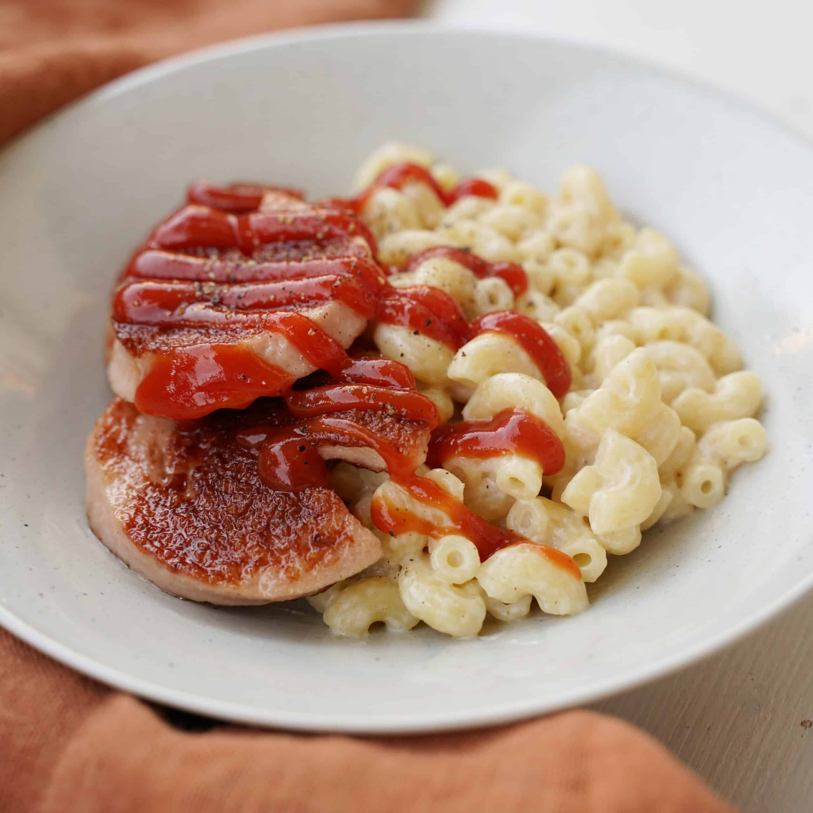

üçΩÔ∏è Falukorv med makaroner (4 portioner)
Det är ett falukorv och mackaroner recpet som är väldigt bra.

Så här gör du:
- Koka upp vatten i en kastrull.
- Tillsätt salt och häll i makaronerna.
- Koka enligt anvisningarna på förpackningen (ca 7–8 minuter).
- Häll av vattnet och rör ner lite smör så att de inte klibbar.
Falukorv:
- Skiva falukorven i ca 1 cm tjocka skivor.
- Hetta upp en stekpanna med lite smör eller olja.
- Stek korvskivorna på medelvärme tills de fått fin färg på båda sidor.
Till servering:
- Lägg upp makaroner och falukorv på tallrikar.
- Servera med ketchup, senap och en enkel sallad om du vill.
- Ät direkt!
kcal per 100g
| falukorv |
makaroner |
vatten |
salt |
smör |
| 200kcal |
100kcal |
0kcal |
0kcal |
300kcal |